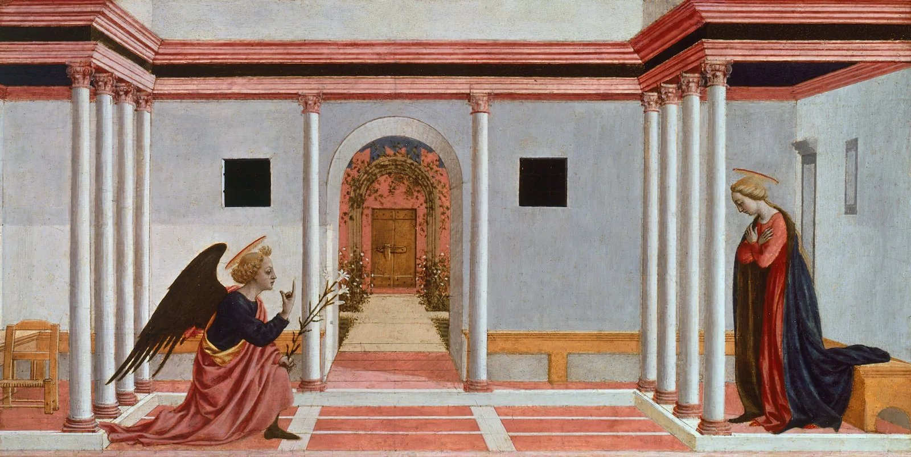

I am a pianist and an organist. You can access some of my recordings on YouTube or bilibili.
Here are some recent ones:
- Piano J. S. Bach: Prelude and Fugue in E Major from WTC Book II, BWV 878
- Organ J. S. Bach: Prelude and Fugue in C minor, BWV 546
Medtner: Sonata-Reminiscenza from Forgotten Melodies, Op. 38 No. 1
Gubaidulina: Chaconne
Franck: Chorale No. 3 in A minor
Tunder, Brahms, Messiaen recital